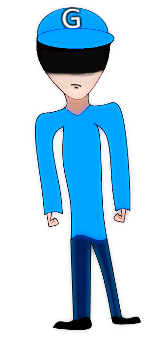
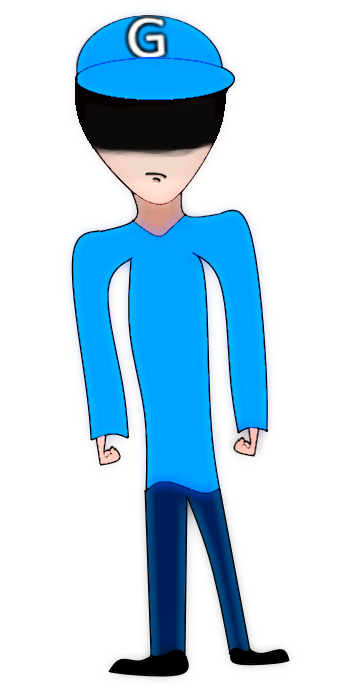
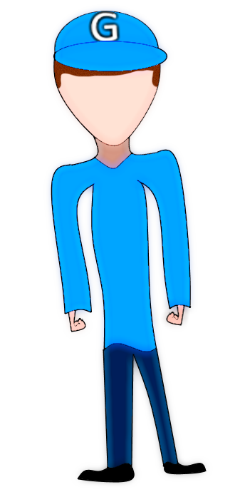
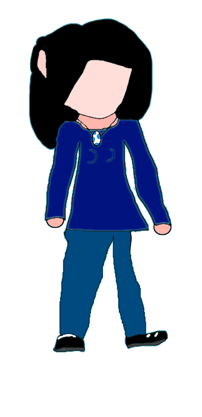
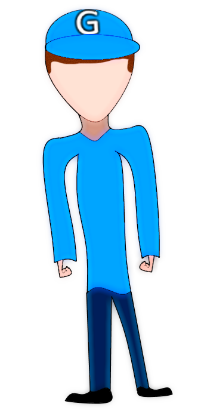
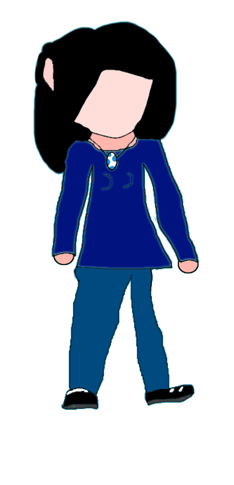
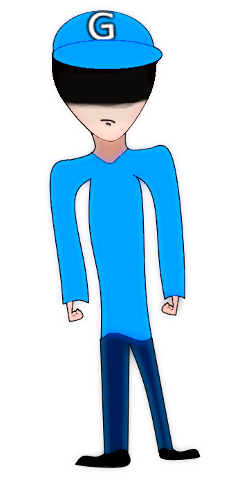
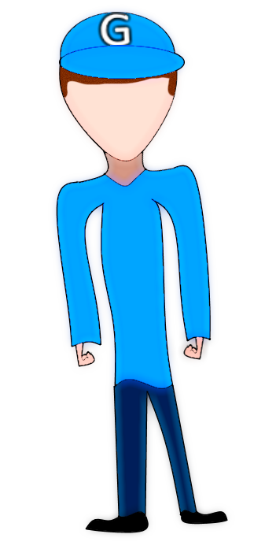
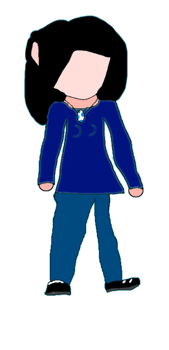

![[ANA JDG] Asterix and the Great Rescue - Megadrive](../vi/6oUXi0ckLmA/default.jpg)
![[ Présentation pour la chaîne Grenier des Joueurs ] JDG Prod](../art/SHAR.6419.583.2.jpg)


 
 

Retour au blog de KidpaddleetcieGlin

![[Fan-Art]ChibiMii de Kidpaddleetcie Glin](../5252/79895252/pics/3244286244_1_3_7GZVUc6K.png)


 Après la mort de la Playstation 4 après 3 ans d'existence et l'arrivé de Steam sur le marchés des consoles, Nintendo demanda de créer une version inédite de Super Mario Bros pour la WiiU. FanYoshiBleu qui participait à toutes les réunions marketing et de conception proposa un « Super Mario Bros Explorer Edition », un jeu où Mario partirai du château de la princesse Peach pour aller faire des photos du royaume champignon avec le gamepad de la WiiU. Le jeu fût une réussite car les joueurs partageaient leurs photos sur les réseaux sociaux et les vidéos parodies avaient toutes dépassés les 1000 vues sur YouTube, une PUB gratuite aussi influent que de la publicité excessive.
Après la mort de la Playstation 4 après 3 ans d'existence et l'arrivé de Steam sur le marchés des consoles, Nintendo demanda de créer une version inédite de Super Mario Bros pour la WiiU. FanYoshiBleu qui participait à toutes les réunions marketing et de conception proposa un « Super Mario Bros Explorer Edition », un jeu où Mario partirai du château de la princesse Peach pour aller faire des photos du royaume champignon avec le gamepad de la WiiU. Le jeu fût une réussite car les joueurs partageaient leurs photos sur les réseaux sociaux et les vidéos parodies avaient toutes dépassés les 1000 vues sur YouTube, une PUB gratuite aussi influent que de la publicité excessive.![[DJ-Glin]Mes 3 petits sons](../5252/79895252/pics/3234058007_0_2_FmQZJYFV.png)
![[Mon Avis sur la question]L'amour peut-il être virtuel?](../5252/79895252/pics/3233496441_1_4_HDFAEnbr.png)
![[Mon Avis sur la question]L'amour peut-il être virtuel?](../5252/79895252/pics/3233496441_1_8_vqH8Qdrs.png)

Kidpaddleetcie (Glin) on deviantART
Art - community of artists and those devoted to art. Digital art, skin art, themes, wallpaper art, traditional art, photography, poetry / prose. Art prints.
![[Une Journée sur]Minecraft](../5252/79895252/pics/3227172201_1_2_fgm79AP6.png)
![[Une Journée sur]Minecraft](../5252/79895252/pics/3227172201_1_4_CFD6neym.png)
![[Une Journée sur]Minecraft](../5252/79895252/pics/3227172201_1_6_PcVBpGSA.png)
![[Une Journée sur]Minecraft](../5252/79895252/pics/3227172201_1_8_oOjEulnS.png)
![[Une Journée sur]Minecraft](../5252/79895252/pics/3227172201_1_10_xhqaFgfN.png)
![[Une Journée sur]Minecraft](../5252/79895252/pics/3227172201_1_14_IMUEOoQe.png)
![[Une Journée sur]Minecraft](../5252/79895252/pics/3227172201_1_16_5qgqfrYb.png)
![[Une Journée sur]Minecraft](../5252/79895252/pics/3227172201_1_12_m2x6uhfN.png)

![[Fan-Art]FanYoshiBleu adventure!](../5252/79895252/pics/3244109334_1_3_P7dyZbr4.jpg)
![[Fan-Art]FanYoshiBleu adventure!](../5252/79895252/pics/3244109334_1_5_KEfW0vrP.jpg)


Partage